3 Visualization Options
In this chapter, we explore various visualization options available in the fdid package.
3.1 Raw means
-
ci = FALSEremoves the 95% confidence intervals.
plot(fdid_results_ols1, type = "raw", ci = FALSE)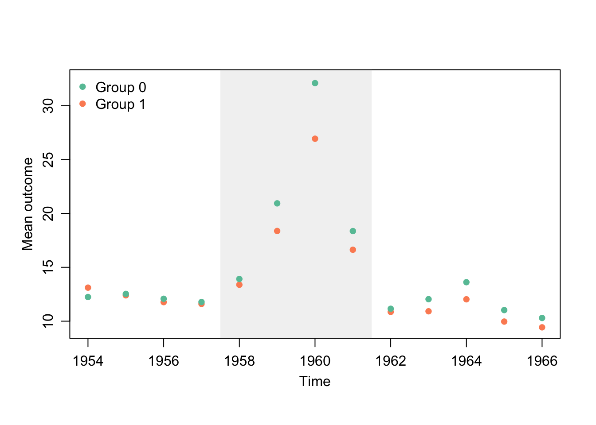
-
connected = TRUEconnects points with lines (default:FALSE).
plot(fdid_results_ols1, type = "raw", connected = TRUE)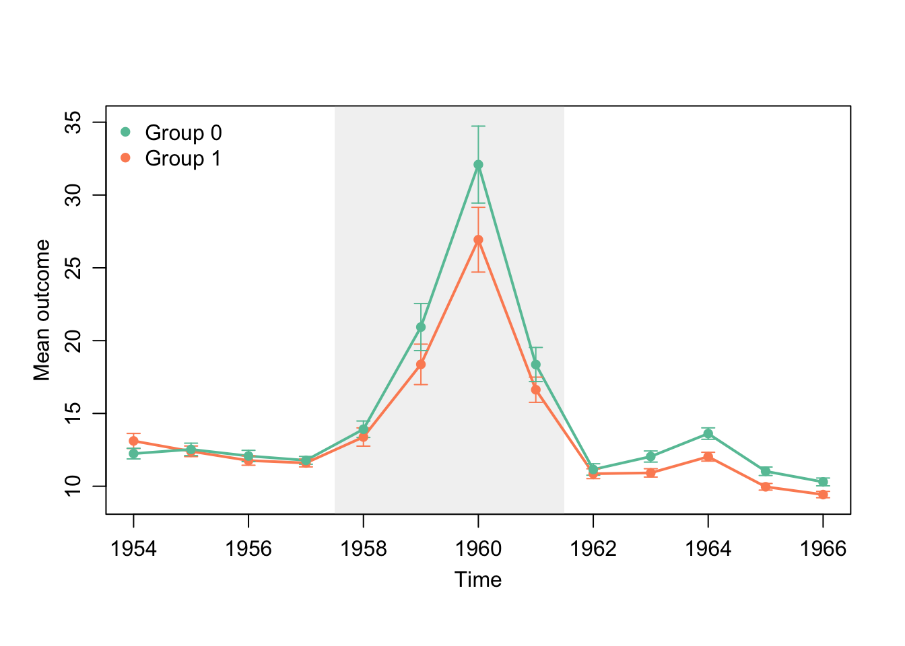
-
group_labelsrenames the two groups.
plot(fdid_results_ols1, type = "raw", connected = TRUE,
group_labels = c("Low Social Capital", "High Social Capital"))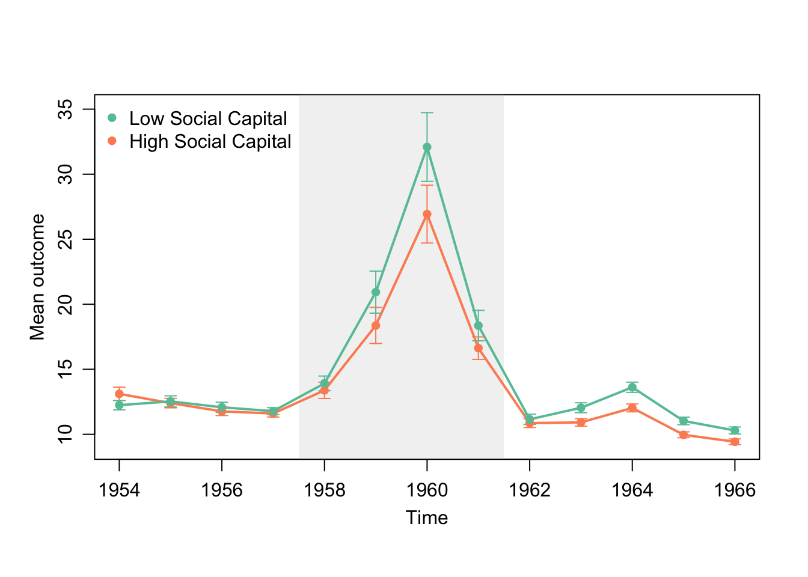
-
palettechooses an RColorBrewer palette (default: “Set2”).
plot(fdid_results_ols1, type = "raw", connected = TRUE,
group_labels = c("Low Social Capital", "High Social Capital"), palette = "Set1")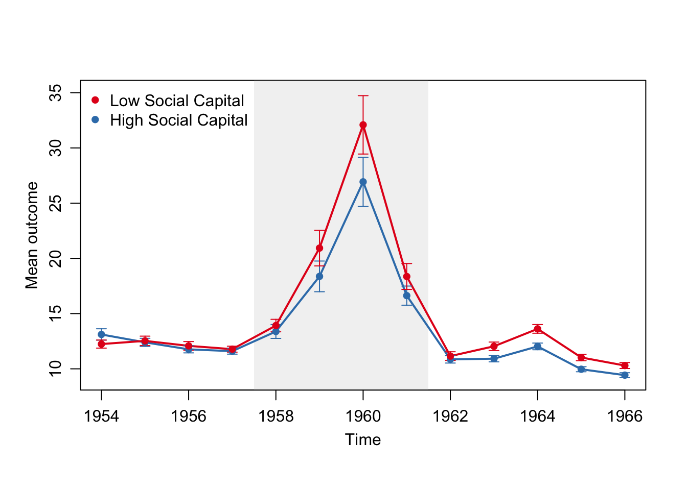
-
shade_periodscontrols the position of shaded region. Default isx$tr_period, i.e. the event window.- By setting
shade_periods = c(1954, 1957), the pre-event periods can be set shaded. - By setting
shade_periods = NULL, the user can also remove the shaded region.
- By setting
plot(fdid_results_ols1, type = "raw", connected = TRUE,
group_labels = c("Low Social Capital", "High Social Capital"),
shade_periods = c(1954, 1957))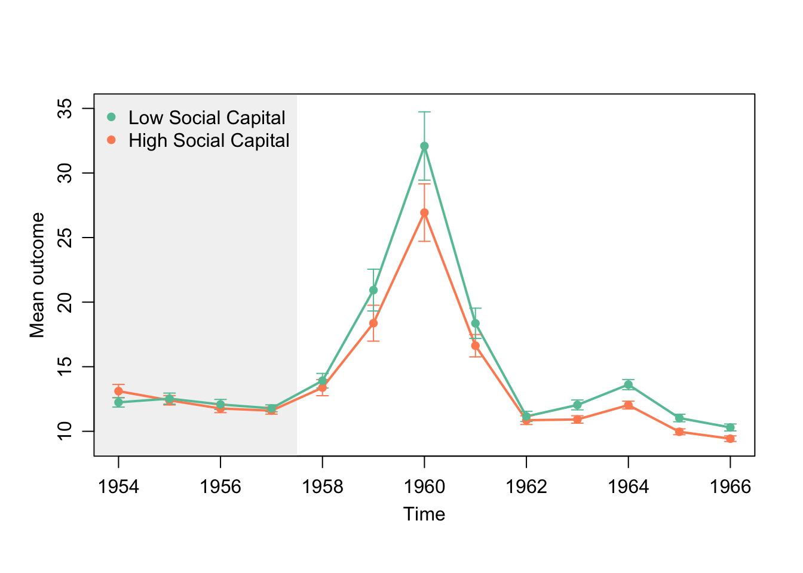
plot(fdid_results_ols1, type = "raw", connected = TRUE,
group_labels = c("Low Social Capital", "High Social Capital"),
shade_periods = NULL)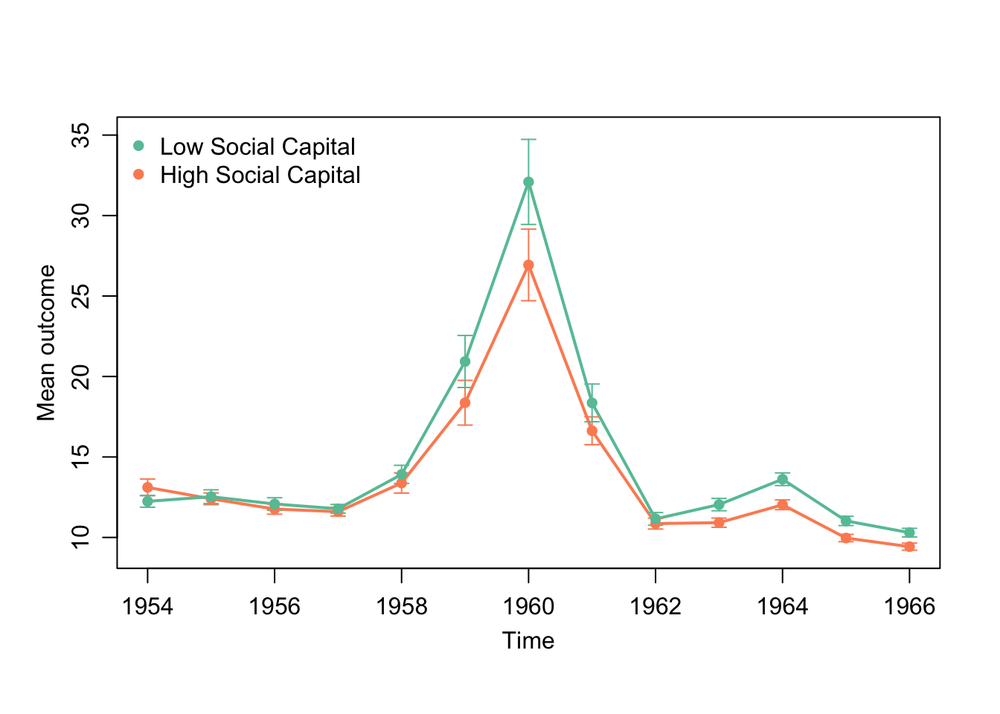
-
alpha_shadecontrols the transparency of the shaded region.
plot(fdid_results_ols1, type = "raw", connected = TRUE,
group_labels = c("Low Social Capital", "High Social Capital"),
alpha_shade = 0.6)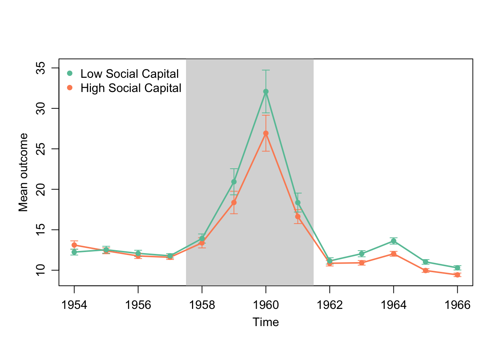
- The user can also set
ylim,xlab,ylab, andmain(currently, xlim is not supported).
3.2 Dynamic estimates
-
ci = FALSEremoves the 95% confidence intervals.
plot(fdid_results_ols1, type = "dynamic", ci = FALSE)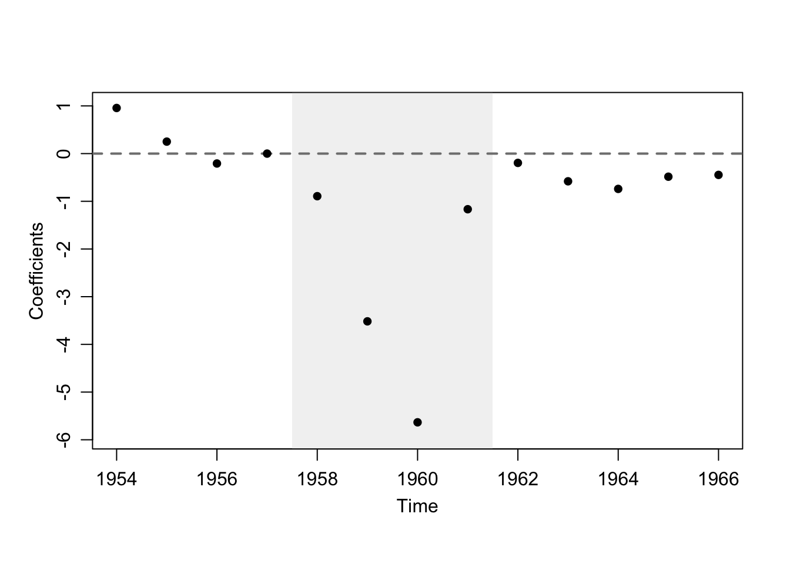
-
connected = TRUEconnects points with lines (default:FALSE).
plot(fdid_results_ols1, type = "dynamic", connected = TRUE)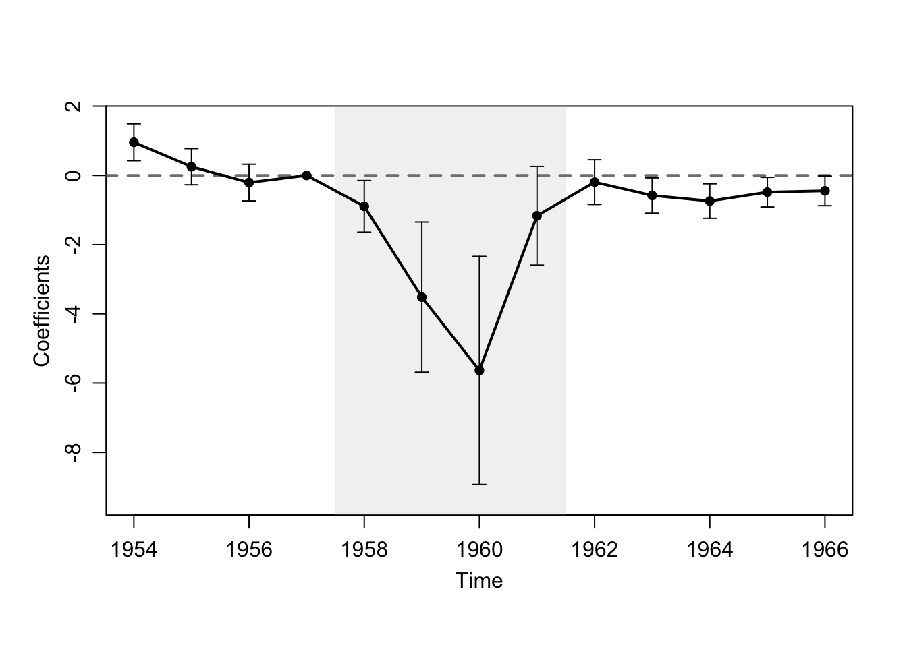
-
shade_periods,alpha_shade,ylim,xlab,ylab, andmaincustomize the plot as above.
plot(fdid_results_ols1, type = "dynamic", connected = TRUE,
shade_periods = c(1954, 1957),
alpha_shade = 0.8, ylim = c(-10, 4),
ylab = "Dynamic Moderating Effect", xlab = "Year",
main = "Dynamic Effect of High Social Capital"
)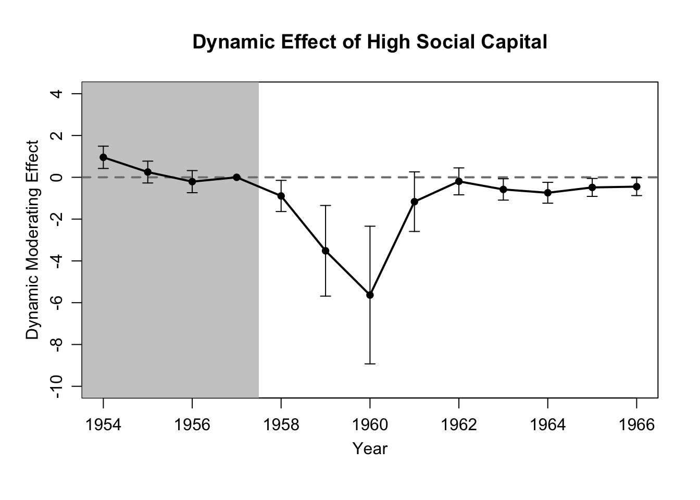
-
xlimzooms into a subset of years.
3.3 Overlap test
The user can adjust palette, ylim, xlab, and main:
3.4 Comparison of methods
By default, the comparison plot shows vertical estimates and CIs (i.e. a horizontal layout). Set vertical = FALSE for horizontal estimates and CIs.
plot(fdid_list(fdid_results_did, fdid_results_ols1, fdid_results_ols2,
fdid_results_ebal, fdid_results_aipw), vertical = FALSE
)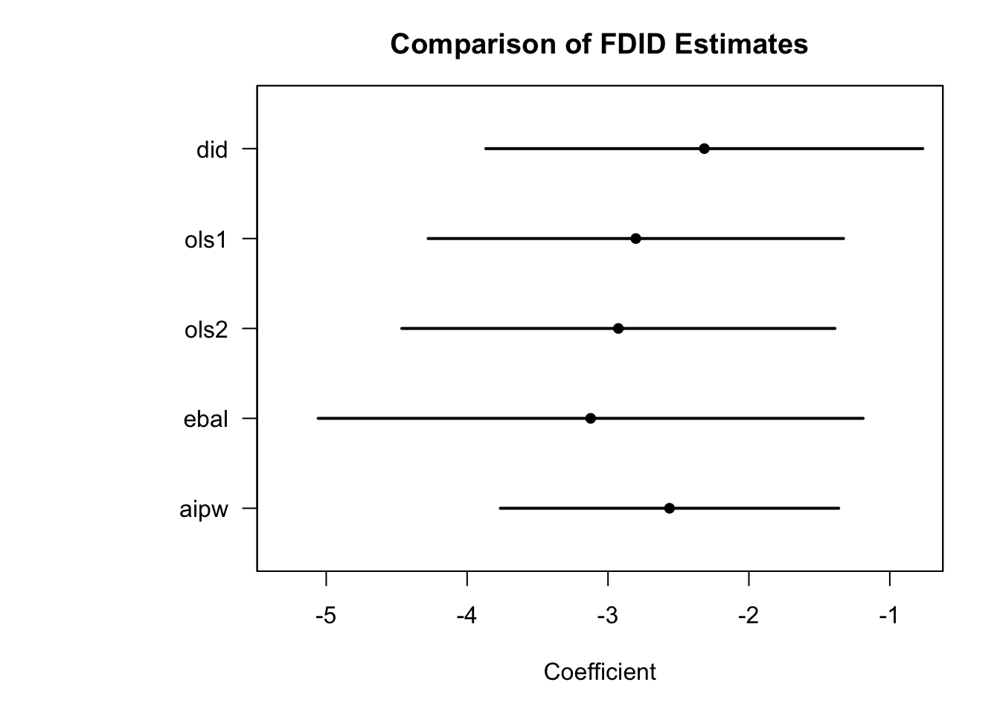
Common options:
xlabandmainchange labels/titles.ylimsets the range of the estimates axis.
plot(fdid_list(fdid_results_did, fdid_results_ols1, fdid_results_ols2,
fdid_results_ebal, fdid_results_aipw),
ylim = c(-5,5)
)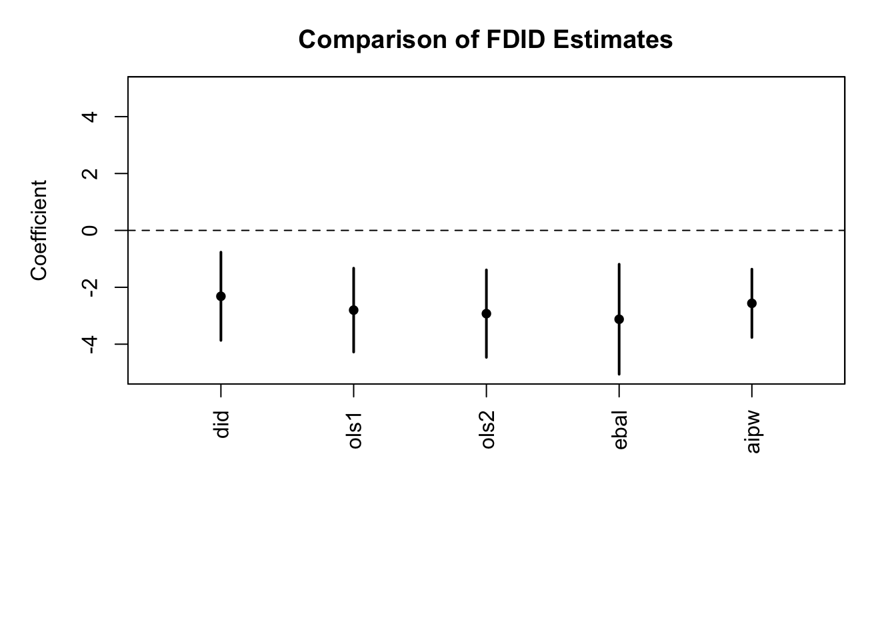
plot(fdid_list(fdid_results_did, fdid_results_ols1,
fdid_results_ols2, fdid_results_ebal, fdid_results_aipw),
xlab = 'Static Estimates',
main = 'Comparing Differenct Methods', vertical = FALSE,
ylim = c(-10,10)
)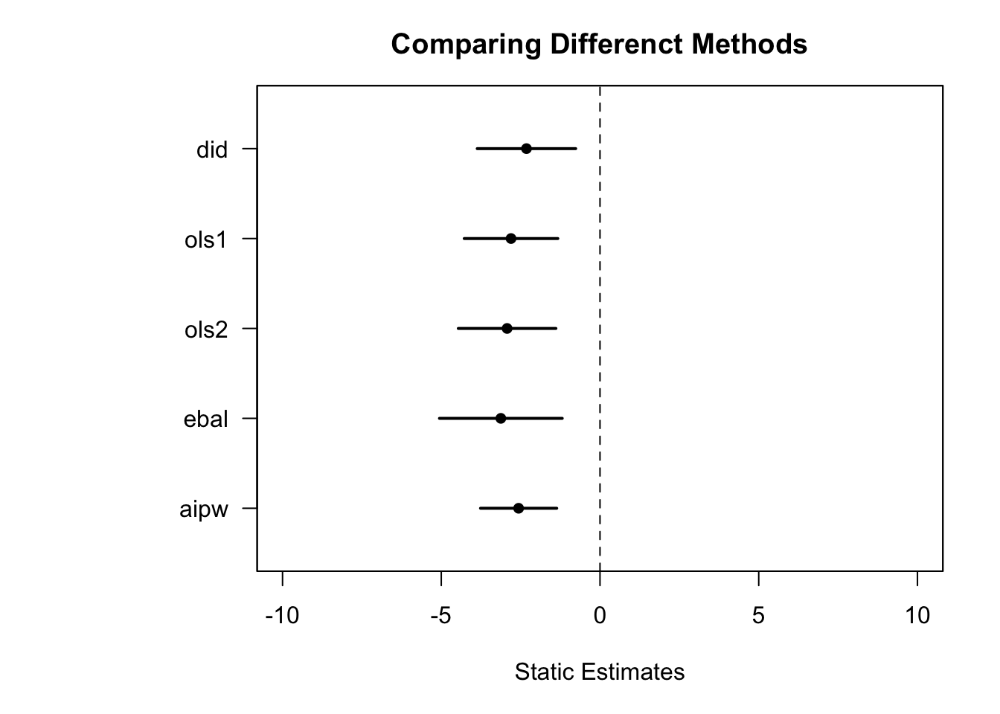
The labels reflect method, and add vartype when it is not the default "robust". Other settings (e.g., target.pop) are not currently shown in the labels.